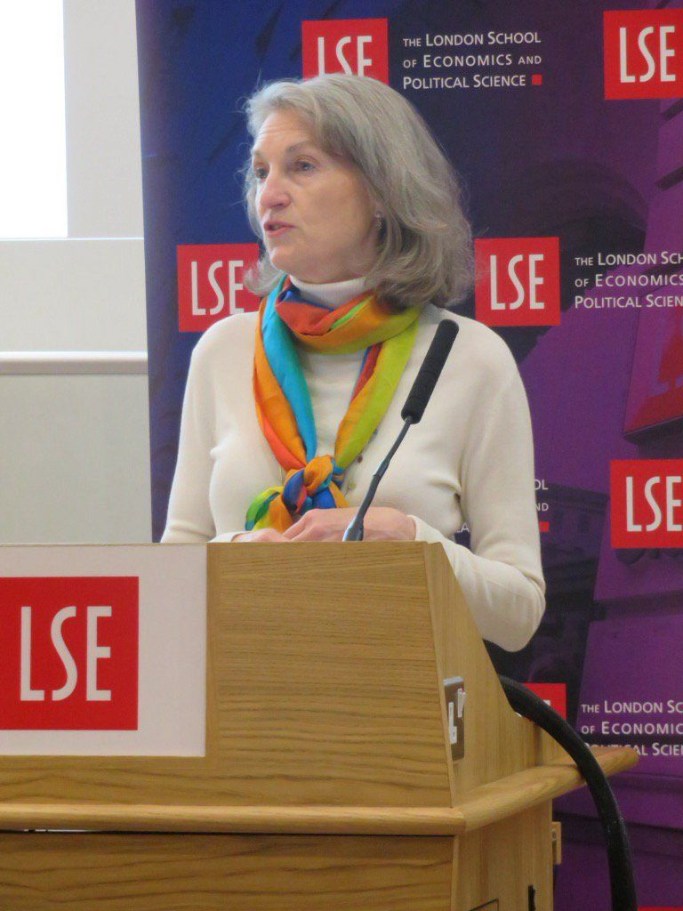

收录于合集
#民主与民主化 34 个
#比较政治学 121 个
文献来源： James Mahoney and Kathleen Thelen, “Comparative-historical analysis in contemporary political science”, in James Mahoney and Kathleen Thelen eds. Advances in Comparative-Historical Analysis , Cambridge University Press, 2015. pp3-36.
作者简介： James Mahoney，美国西北大学政治学系与社会学系双聘教授，研究兴趣为比较历史分析，拉美研究。
Kathleen Thelen，麻省理工学院政治学系教授，美国政治学会主席，研究兴趣为政治经济学、历史制度主义、劳工政治。

一、引言
比较历史分析在政治学中有着悠久而卓越的历史。在一系列研究路径和方法创新的冲击下，比较历史分析经受住了时间的考验，始终成为诸多学者的研究选择，也为使用其他方法论工具的学者设置了研究议程。
政治科学中的方法论争并不新鲜，但近来似乎有愈演愈烈之势。从80年代末开始，理性选择理论进入学科主流，博弈论的学术研究因其模型的精致性和解释的有限性受到了相当大的肯定与争议。即使此类工作并没有想象中的作用，但显然它在学科中占据着重要地位。作为“因果推断革命”的拥护者，实验方法已经席卷了很多领域。实验主义者强调研究设计，招募研究对象参与实验来控制重要变量的影响。传统的回归分析和定性的案例研究越来越受到蔑视，实验方法的忠实拥趸们严肃地告诫忽视因果推断革命的研究生后果自负。大数据成了政治科学前沿的新标语。围绕大数据开展的研究议程部分地受到技术进步和社会科学基础建设的推动。对于此类学者而言，问题在于新数据源和新技术可以用来解决什么问题。
在方法论的漩涡中，在当前高度关注数据收集和理论检验的背景下，比较历史分析恰恰通过 坚持关注理论生成 和在宏观层面上解释重大而复杂的结果 （其他路径因经验上的困难越来越回避这些问题）而大放异彩，并与其他研究路径既互补又竞争，始终在当代政治科学研究中占据一席之地，往往为其他方法论取向的学者设置研究议程。
比较历史分析的持久影响源自三个核心特征的比较优势。首先，比较历史分析的 宏观组态取向（macroconfigurational orientation） 将它与政治学经典对接，持续关注具有重大影响的政治和政治-经济结果。其次， 问题导向的以案例为基础的研究（case- based research） 成为适用广泛的议程设置的重要来源。再次， 时间导向的分析（temporally oriented analysis） 对于理解政治中的过程和时间做出了独特贡献。
****二、 宏观组态研究
（macroconfigurational research
1.宏观的取向(macroscopic orientation)
**
**
研究者关注宏大的结果，比如国家建设、民主转型、不平等的社会模式、战争与和平。研究者通常也关注宏大原因，包括广泛的政治经济结构（例如殖民主义）和复杂的组织制度安排（例如社会政策体制）。部分学者将比较历史分析对宏大结果和原因的强调与其他路径对“方法论个人主义”的关注作对比，后者认为政治结构必须追溯到个体行为者的行动和动机。然而， 宏观理论关注何种（which）与何时（when）微观层面的过程和行为可能是最重要的 。作为理论检验的一部分，比较历史分析学者往往依赖档案和原始资料，在更近的距离检验特定的重要事件和模式，钻研特定历史能动者的动机和行动。
当宏观层次的观点与微观解释不一致时，它们的有效性不需要被分解为个人层次的行为；实际上，将所有过程分解为个人层次的选择和行为的要求将导致大量宏观研究无法实现。但是，更基本的一点是，在结构性特征发挥关键的因果作用的地方，坚持所有结果都追溯到个体行动者的行动和策略将一无所获。采用单一的微观取向的方法意味着忽视重要的更高层次的因果过程。 结构性变量、大跨度过程或组织化特征通过塑造个体行动者的利益起着至关重要的因果作用。没有鉴别关键能动者所处的宏观结构性环境，任何人都无法理解他们的利益和行动。
2.因果组态和情境
比较历史分析的组态成分是指研究者考虑多重因素如何结合从而形成更大的复合物和因果“包”（causal packages）的方式。这种组态分析如此突出的原因之一是比较历史分析研究的结果往往是多个事件和过程的组合。它假定交互作用的复杂性是普遍的，因此 单个因果要素通常必须作为更大组合的一部分来分析 。在理解投资对发展的影响时，比较历史分析认为一个变量所发挥的作用通常需要考虑其他变量，即投资对发展产生积极、消极影响或不产生影响，取决于其他变量的作用。这些其他变量同投资一道，组成了一个对发展产生影响的更大的条件组合。
对于研究中的宏大结果而言，比较历史分析研究者相信除了根据发生的情境，没有其他方法能够分析原因的作用。为了简约而将案例与它的情境相分离可能导致严重的误导结果。 去情境化只是除去过度的细节，这是科学的，但是如果它消除了关键的变量和互动，那是科学的不幸。
3.互补性与借鉴
并不是所有的方法同等适用于解决宏大现象。不同的方法用来解决不同类型的问题，我们应该分析特定路径解决问题的成本和收益。可以说，因果推断革命的一个重要结果是戏剧性地收窄了学者可能从事的研究类型。宏观层面上的原因和结果不易于实验设计。转向实验研究并不仅仅改变了我们所问的问题，它经常以特定的路径寻找答案。研究者可能几乎难以有效控制诸多最重要的宏观政治因素——权力、资源、制度和意识形态。
学科中一个更遗憾的趋势是基于方法和数据来选择问题。许多学者建议我们应该寻找适用于现代方法的问题，并在数据最丰富的地方寻找答案。他们建议我们远离那些也许重要、但经验处理棘手的问题。换言之，一些学者着重指引我们去灯柱下搜寻，并警告在黑暗中四处挖掘是毫无意义的。但是，人们不得不怀疑在灯光最亮的地方寻找答案能否获得最重要的解释。
以特定案例为基础的组态分析至少在部分程度上使比较历史分析区别于统计研究，后者通常更关注特定变量的平均效应。但是，比较历史分析能够与同样关注宏观结果和变量的统计分析合作。将传统的回归分析与典型案例的细致分析相结合能够收获很多。比较历史分析在特定案例中的因果组态发现能够推动统计检验，确认结构中变量的更加一般化的作用。
三、以案例为基础的研究
（case-based research）
1.关注现实世界的难题
比较历史分析的第二个特征是以案例为基础的研究。它强调比较历史分析观察到的解释往往是在特定时空中的，而且需要因果机制的解释来实现。比较历史分析是问题导向的，它因现实世界的问题而充满生机，比较历史分析学者被特定时空中的经验性难题所吸引。 他们可能会问为什么在许多关键维度相似的案例在某个因变量上显示出非常不同的结果，为什么表面看来不同的案例都有相同的结果。 当特定案例不符合既有理论或大样本研究的预期时，现实世界的难题也可能形成。因此大部分比较历史分析研究非常关注案例的范围条件（scope conditions）。确定这些范围条件成为确定情境的一部分，在该情境中作者相信自己的观点是有效的。简言之，在解决现实世界的难题时，比较历史分析研究常常产生新见解和新理论。这能够推动更广泛的研究议程。
2.经验性机制
比较历史分析对现实世界难题的解释集中在说明原因和因果组态在特定案例中发挥作用的机制。研究者必须通过打开黑箱和确定过程来说明为什么是这样。与以案例为基础的研究相一致，比较历史分析学者在个别案例的层面上通过观察来研究机制：机制是经验上被确认的而不是简单地假想为可信的。这种经验上基于机制的解释要求钻研细节，因此需要深入理解分析中的案例。对案例中经验性机制的关注与比较历史分析中过程追踪（process tracing）的使用紧密相关。学者一定程度上通过追踪单一案例中连接最初事件和随后结果的过程来发展和检验替代性理论。有关案例的丰富的历史知识通常是必要的，具备案例专长的学者在找出因果关系是或非因果关系的解释时存在巨大的优势。
3.互补性与借鉴
**
**
将经验性案例的比较历史分析路径和其他分析模式相比较是有用的。在大量的形式模型研究（formal modeling research）中，经验性案例用来说明演绎理论的合理性。但这种程式化的案例没有足够深入地阐明理论背后的因果机制，从而产生精确的、可检验的假设供他人研究。比较历史分析中以案例为基础的优秀研究推动着更深入的研究和应用，因为它提供了特别清晰和经验上站得住脚的因果主张，并邀请其他研究者关注、检验、完善，最终证实或拒绝这一原创性发现。
实验研究很大程度上采用了非常不同的路径，将解释的目标缩减为确定平均效应。虽然实验研究有助于测量处理效应（treatment effect）的存在或者大小，但它经常难以打开“黑箱”和显示为什么会有这种效果。对他们而言，X对Y是否（whether）有某些影响是关键，而X对Y为什么（why）有影响的问题是次要的。但是，不知道这种作用机制就无法预料这种关系在其他情况下会如何改变，我们也会困惑在不同情境下何时没有这种效果或者产生其他意外结果。
当代政治科学的一个显著特征是对理论检验的热情。何处产生新的理论的问题——何处培养新理论的种子——经常迷失于这种热情之中。政治科学家能用更多的严格方法来检验既有理论的同时，往往会迷失在发现异常或意想不到的无效结果的时候。大数据的趋势可能会加剧当代政治科学中的理论生成问题。已经投巨资到获得操控大数据集的技能中的学者，可能被利用这些来之不易的技术技能解决的问题所吸引。
四、时间导向的研究
（temporally oriented research）
1.时间位置（temporal location）
比较历史分析研究者认为，时间过程的研究对于有效理解和解释现实世界的政治结果至关重要。 在比较历史分析中，一个变量的影响可能取决于它的时间位置。同一个变量可以有不同的影响，取决它相对其他过程和事件何时发生。 因此，比较历史研究研究密切关注变量出现的序列（sequence）和时机（timing）。事实上，放置一个解释“语境”往往意味着在一个特定的时空背景情境变量。
路径依赖的早期事件比之后的事件对结果发挥更强的因果作用。由于路径依赖的可能性，在比较历史分析多工作的重点是确定的历史转折点（historical turning point）或关键节点（critical junctures)。这些历史时期包含了解释长期模式如何开始的选择过程和原因。比较历史分析研究者对时间位置敏感是因为他们历史地看待案例并将其置于事件展开序列的情境之下。研究时间位置有力的分析工具包括关键节点、路径依赖、时机、序列与结合点。
2.时间结构
比较历史分析明确地意识到变量和过程本身有一种时间结构。因此， 我们必须不仅追问某些过程或事件是否以一种特定的强度发生，还要询问它们发生的时间维度。这不仅是因为时间结构能够塑造因果效应的形式和本质，还因为事件和过程的时间结构本身就是值得解释的重要结果。 我们需要留意渐进的、缓慢运动的、很难发现的因果过程和临界点、扩散或积累的过程
通过关注因果过程和作用的时间结构，比较历史分析学者开创了与制度变迁的典型模式的广泛对话，这主要包括替代（displacement）：消除现有制度引入新的制度；层叠（layering）：在现有制度上增加新的制度；漂移（drift）：环境的变化改变了制度的作用；转换（conversion）：策略的变化改变了制度的作用。
3.互补性与借鉴
并非只有比较历史分析关注时间性问题。始于1990年代的“时间革命”反对以一种截面的、一次性的、快照式的方式看待政治。这场运动将时间分析带入政治科学的主流，把“时间”纳入政治分析的更核心地位，例如贝叶斯决策的时间序列和分析性叙述。大多数的实验研究注重短期分析，在这类研究中，时间是静止的，忽视了探索随时间展开的因果过程，这缩小了我们的研究视野。围绕理解短期过程和结果而组织起来的研究在政治学中占有一席之地。然而，忽视长期过程和因果关系的代价是显著的。没有理由认为最重要或最有趣的政治动力可以通过一个短期的时间结构捕获。
五、结语
本文将比较历史分析活力和适应性追溯到它的核心特征。比较历史分析的一个优势是源自开放性的适应性，与其他方法论的互补性可以成为互利。它的核心特征是关注宏观组态解释、强调深入的以案例为基础的研究和关注政治的过程与时间维度。三者具有明显的互补性，在比较历史分析研究中是紧密联系的。宏观组态分析通常具有强烈的时间维度，因为事件的时机和序列形成在一定程度上形成了产生结果的情境。同样，深入的以案例为基础的研究有助于确定因果机制和不同变量与过程在时间中展开的互动。
编译：何家丞
审读：杨端程
编辑：吴温泉


政文观止
微信扫一扫赞赏作者 __赞赏
已喜欢，对作者说句悄悄话
取消 __
发送给作者
发送
最多40字，当前共字
上一页 1/3 下一页
长按二维码向我转账
受苹果公司新规定影响，微信 iOS 版的赞赏功能被关闭，可通过二维码转账支持公众号。